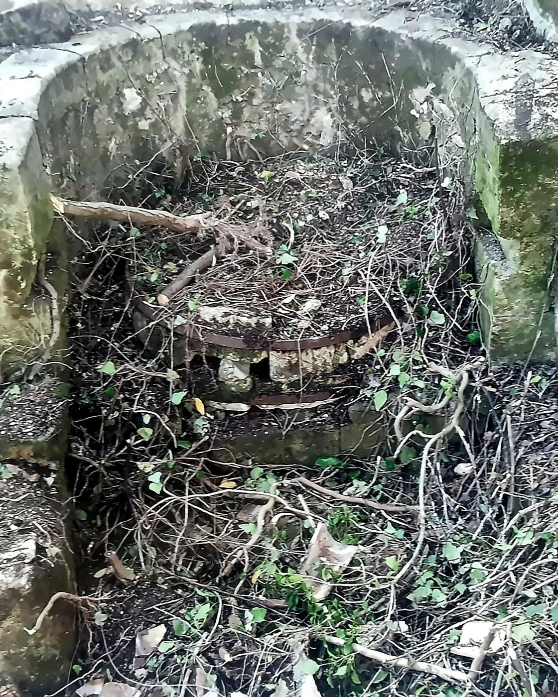
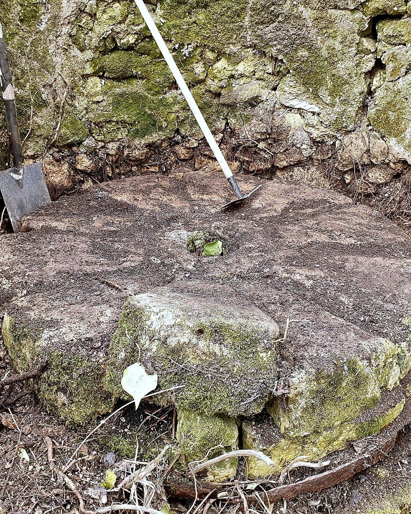
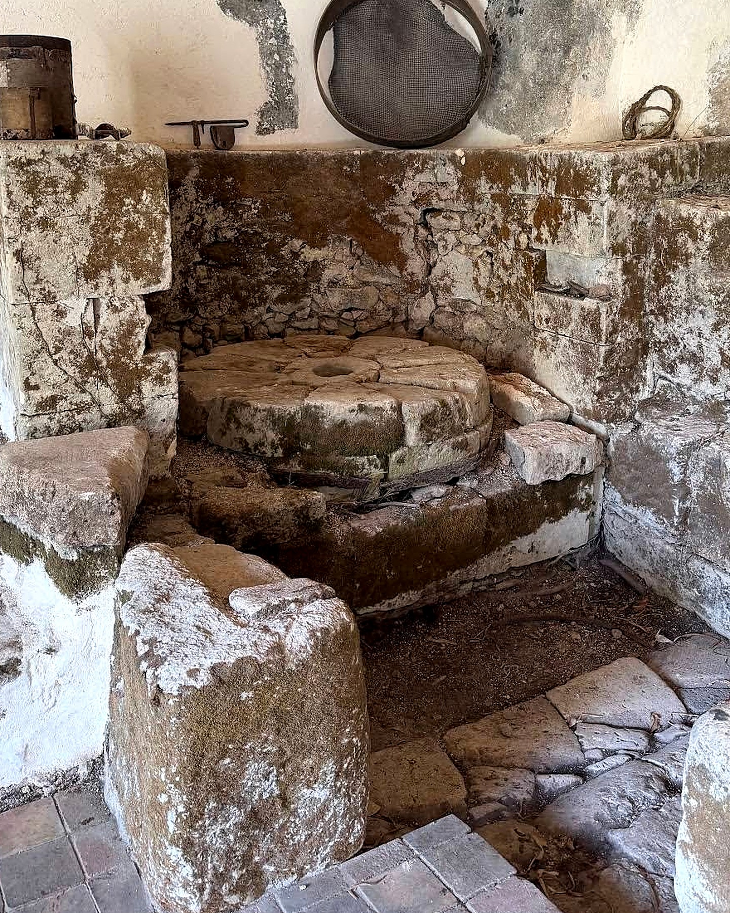
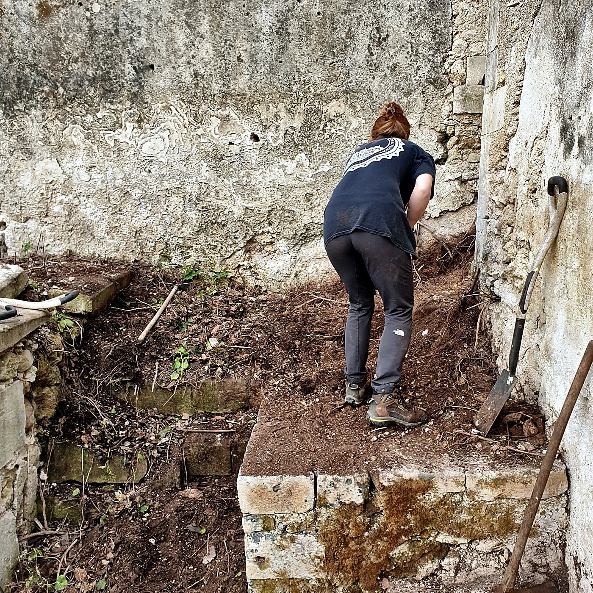
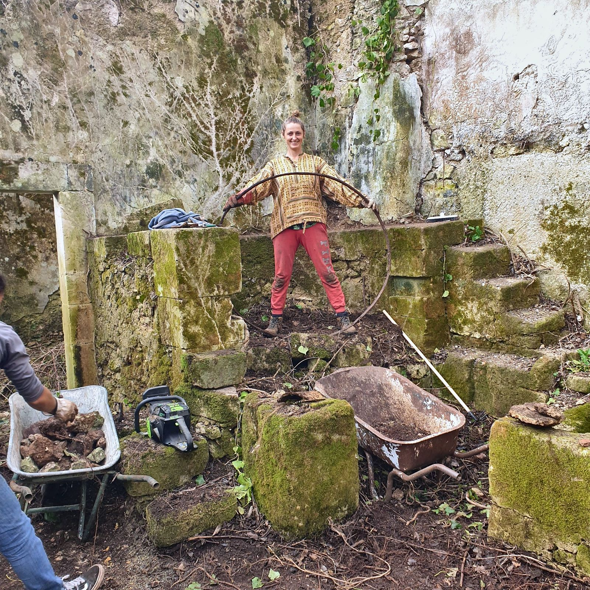
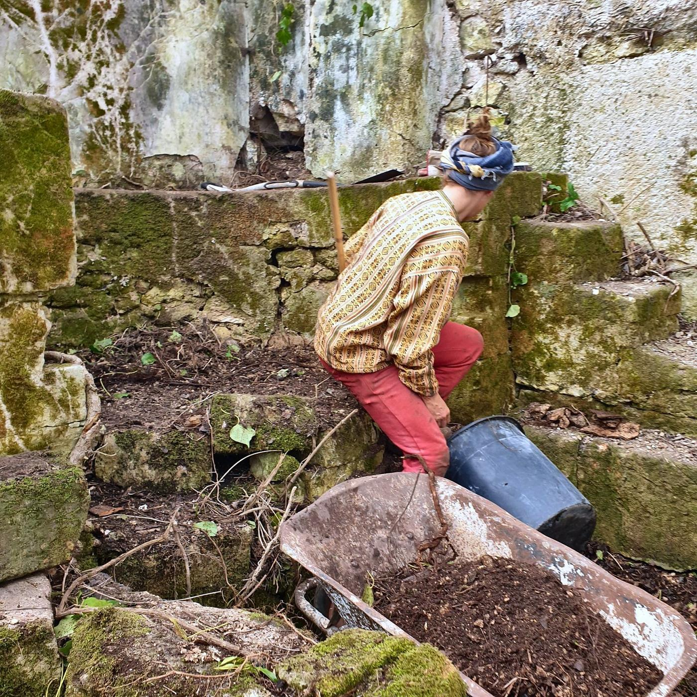
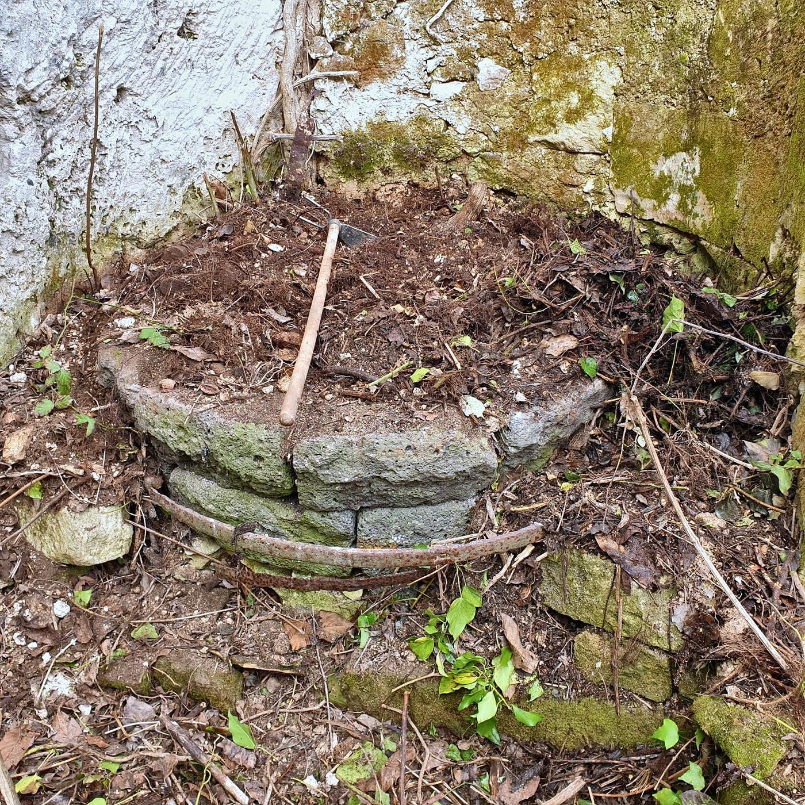
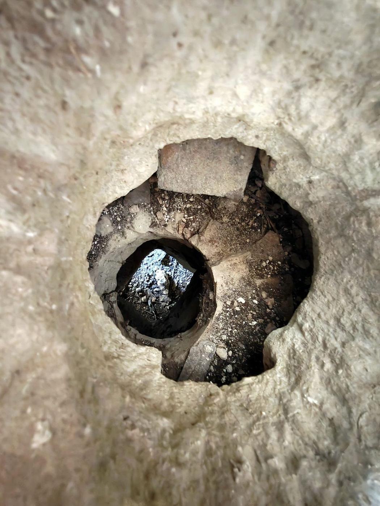

L'antica macina, riportata alla luce.
La macina del mulino ad acqua giaceva sotto piante e terra. È stata scoperta e pulita a mano. Non gira più, ma è la memoria più antica del lavoro di questa casa.



Ritrovato sotto l'edera e la terra.
Il mulino ad acqua era scomparso nella collina. È stato disegnato, misurato e liberato a mano, una carriola alla volta, finché le macine sono tornate alla luce. L'edificio è del Settecento, sopra un sistema realizzato probabilmente dai Romani e dai Greci.


Un rudere dietro un cancello di ferro.
Le vecchie fotografie mostrano il mulino prima dei lavori: il tetto mezzo crollato, le finestre vuote, i muri coperti dalle piante.


Liberato dagli amici, una carriola alla volta.
Nessuna macchina è entrata nel cortile. Terra, radici e pietre sono state portate via a mano, e il terreno ha restituito le sue cose: cerchi di ferro, gradini e la base di una macina.






Misurato a mano prima di spostare una pietra.
Il rilievo mostra come il mulino si appoggia alla roccia: l'acqua cade dietro il muro, passa sotto la sala di molitura ed esce da un arco.


